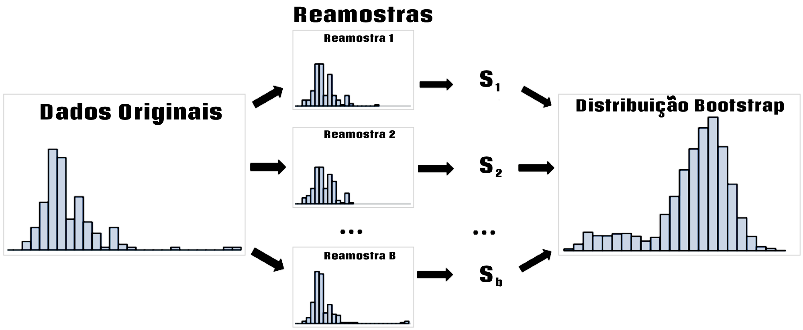

4. Distribuições de Dados¶
Entender uma distribuição significa observar onde os dados se concentram, quanto variam e com que frequência valores extremos aparecem. Esses conceitos conectam a estatística descritiva à inferência: primeiro descrevemos a variabilidade dos dados; depois estudamos como estatísticas amostrais variam e como distribuições de probabilidade permitem quantificar essa incerteza.
Neste notebook, partimos das medidas de dispersão e avançamos para distribuição amostral, Teorema do Limite Central (TLC), bootstrap, intervalos de confiança e algumas distribuições de probabilidade importantes.
import math
import matplotlib.pyplot as plt
import numpy as np
import pandas as pd
import seaborn as sns
from scipy import stats
from sklearn.utils import resample
sns.set_theme(style="whitegrid")
LOANS_INCOME_CSV = 'data/loans_income.csv'
loans_income = pd.read_csv(LOANS_INCOME_CSV).squeeze('columns')
print(f'Observações: {len(loans_income):,}')
loans_income.head()
4.1. Dispersão e distribuição amostral¶
As medidas de tendência central resumem a posição dos dados; as medidas de dispersão descrevem o quanto eles se espalham. As principais são:
Amplitude: diferença entre o maior e o menor valor.
Variância: média dos desvios quadráticos em relação à média. Para uma amostra, usamos normalmente \(s^2\), com divisor \(n-1\).
Desvio padrão: raiz da variância, portanto expresso na mesma unidade dos dados.
Intervalo interquartil (IQR): \(Q_3-Q_1\), que mede a dispersão dos 50% centrais e é menos sensível a valores extremos.
A amplitude, a variância e o desvio padrão são mais afetados por valores extremos. O IQR costuma ser mais informativo em distribuições assimétricas.
amplitude = loans_income.max() - loans_income.min()
variancia = loans_income.var()
desvio_padrao = loans_income.std()
iqr = loans_income.quantile(0.75) - loans_income.quantile(0.25)
pd.Series({
'Amplitude': amplitude,
'Variância amostral': variancia,
'Desvio padrão amostral': desvio_padrao,
'IQR': iqr
}).round(2)
fig, (ax1, ax2) = plt.subplots(
2, 1,
figsize=(10, 7),
gridspec_kw={'height_ratios': [4, 1]},
sharex=True
)
sns.histplot(loans_income, kde=True, bins=30, ax=ax1)
media = loans_income.mean()
ax1.axvline(media, linestyle='--', label=f'Média = {media:,.0f}')
ax1.axvline(media - desvio_padrao, linestyle=':', label='Média ± 1 desvio padrão')
ax1.axvline(media + desvio_padrao, linestyle=':')
ax1.set_title('Distribuição dos rendimentos anuais')
ax1.set_ylabel('Frequência')
ax1.legend()
sns.boxplot(x=loans_income, ax=ax2, orient='h')
ax2.set_xlabel('Rendimento anual')
plt.tight_layout()
plt.show()
No histograma, as linhas ao redor da média mostram uma distância de um desvio padrão. O boxplot resume outra parte da estrutura: a linha central representa a mediana e a caixa se estende de \(Q_1\) a \(Q_3\), tendo largura igual ao IQR.
4.1.1. Distribuição amostral e TLC¶
Uma distribuição amostral é a distribuição de uma estatística — por exemplo, a média — obtida ao repetir o processo de amostragem da mesma população. Ela não deve ser confundida com a distribuição dos valores individuais.
Como discutido em [Bruce et al., 2020], aumentar o tamanho da amostra reduz a variabilidade da média amostral. Para uma população com média \(\mu\), desvio padrão \(\sigma\) e amostras independentes de tamanho \(n\),
onde \(SE\) é o erro padrão.
O Teorema do Limite Central (TLC) acrescenta que, sob condições usuais — em particular observações independentes e variância finita —, a distribuição de \(\bar X\) se aproxima de uma normal conforme \(n\) cresce. O conhecido \(n\geq30\) é apenas uma regra prática: populações muito assimétricas podem exigir amostras maiores.
rng = np.random.default_rng(42)
valores = loans_income.to_numpy()
def medias_amostrais(valores, n, repeticoes=1000):
return np.array([
rng.choice(valores, size=n, replace=True).mean()
for _ in range(repeticoes)
])
sample_data = rng.choice(valores, size=1000, replace=True)
mean_5 = medias_amostrais(valores, 5)
mean_20 = medias_amostrais(valores, 20)
fig, axes = plt.subplots(3, 1, figsize=(10, 8), sharex=True)
for ax, dados, titulo in zip(
axes,
[sample_data, mean_5, mean_20],
[
'1.000 valores individuais',
'1.000 médias de amostras com n = 5',
'1.000 médias de amostras com n = 20'
]
):
sns.histplot(dados, kde=True, bins=30, ax=ax)
ax.set_title(titulo)
ax.set_ylabel('Frequência')
axes[-1].set_xlabel('Rendimento anual')
plt.tight_layout()
plt.show()
O exemplo mostra duas consequências do aumento de \(n\): a distribuição das médias fica mais concentrada e tende a assumir uma forma mais regular. Para separar esse efeito da forma particular dos rendimentos, podemos repetir o experimento com uma população claramente assimétrica.
rng = np.random.default_rng(42)
populacao = rng.exponential(scale=2.0, size=10000)
tamanhos = [1, 5, 30, 100]
medias = {
n: np.array([
rng.choice(populacao, size=n, replace=True).mean()
for _ in range(1000)
])
for n in tamanhos
}
fig, axes = plt.subplots(2, 2, figsize=(11, 8))
for ax, n in zip(axes.flat, tamanhos):
sns.histplot(medias[n], kde=True, bins=30, ax=ax)
ax.set_title(f'Médias amostrais — n = {n}')
ax.set_xlabel('Média amostral')
ax.set_ylabel('Frequência')
plt.tight_layout()
plt.show()
Mesmo partindo de uma população exponencial, a distribuição das médias se torna progressivamente mais próxima da normal. Note que o TLC descreve a distribuição da média amostral, não afirma que os dados originais se tornam normais.
4.2. Reamostragem e incerteza¶
Reamostragem é o nome geral de métodos que reutilizam os dados observados para estudar a variabilidade de uma estatística. O bootstrap é um desses métodos: novas amostras de tamanho \(n\) são retiradas com reposição da amostra original e a estatística de interesse é recalculada muitas vezes.
Isso permite aproximar a distribuição amostral de estatísticas para as quais uma solução analítica pode ser inconveniente, além de estimar erro padrão, viés e intervalos de confiança.
{kind=link}

Fig. 4.1 Esquema do processo de reamostragem bootstrap.¶
rng = np.random.default_rng(3)
# Amostra original
sample20 = rng.choice(valores, size=20, replace=False)
# Distribuição bootstrap da média
B = 1000
bootstrap_means = np.array([
rng.choice(sample20, size=len(sample20), replace=True).mean()
for _ in range(B)
])
media_original = sample20.mean()
media_bootstrap = bootstrap_means.mean()
vies_estimado = media_bootstrap - media_original
ic_bootstrap_90 = np.percentile(bootstrap_means, [5, 95])
print(f'Média da amostra: {media_original:,.2f}')
print(f'Média das reamostragens: {media_bootstrap:,.2f}')
print(f'Viés bootstrap estimado: {vies_estimado:,.2f}')
print(f'IC bootstrap percentil de 90%: '
f'({ic_bootstrap_90[0]:,.2f}, {ic_bootstrap_90[1]:,.2f})')
sns.histplot(bootstrap_means, bins=30, kde=True)
plt.axvline(ic_bootstrap_90[0], linestyle='--')
plt.axvline(ic_bootstrap_90[1], linestyle='--')
plt.axvline(media_bootstrap, linestyle=':')
plt.title('Distribuição bootstrap da média')
plt.xlabel('Média amostral')
plt.ylabel('Frequência')
plt.show()
Um intervalo de confiança (IC) também expressa incerteza. Na interpretação frequentista, um procedimento de IC de 95% produziria intervalos que contêm o verdadeiro parâmetro em aproximadamente 95% de muitas repetições do experimento — não significa que, depois de calculado o intervalo, o parâmetro tenha 95% de probabilidade de estar nele.
Para a média de uma população aproximadamente normal com desvio padrão populacional desconhecido, usamos a distribuição t de Student:
A distribuição normal \(z\) aparece quando \(\sigma\) é conhecido e também em várias aproximações assintóticas. O uso da t não é restrito a \(n<30\); a diferença para a normal simplesmente diminui à medida que os graus de liberdade aumentam.
n = len(sample20)
media = sample20.mean()
s = sample20.std(ddof=1)
conf = 0.90
alpha = 1 - conf
t_critico = stats.t.ppf(1 - alpha / 2, df=n - 1)
margem = t_critico * s / np.sqrt(n)
ic_t_90 = (media - margem, media + margem)
pd.DataFrame({
'Método': ['t de Student', 'Bootstrap percentil'],
'Limite inferior': [ic_t_90[0], ic_bootstrap_90[0]],
'Limite superior': [ic_t_90[1], ic_bootstrap_90[1]]
}).round(2)
Em dados multivariados, a lógica permanece a mesma, mas a unidade reamostrada deve ser a observação inteira. Ou seja, sorteamos linhas com reposição para preservar a relação existente entre as variáveis daquela observação.
dados_multi = pd.DataFrame({
'idade': [25, 30, 22, 35, 28],
'renda': [3000, 5000, 2000, 6000, 4000]
})
rng = np.random.default_rng(42)
B = 1000
medias_multi = np.array([
dados_multi.iloc[
rng.choice(len(dados_multi), size=len(dados_multi), replace=True)
].mean().to_numpy()
for _ in range(B)
])
resumo_multi = pd.DataFrame({
'Variável': dados_multi.columns,
'Média original': dados_multi.mean().to_numpy(),
'IC 95% inferior': np.percentile(medias_multi, 2.5, axis=0),
'IC 95% superior': np.percentile(medias_multi, 97.5, axis=0)
})
resumo_multi.round(2)
4.3. Distribuições de probabilidade¶
Uma distribuição de probabilidade descreve quais valores uma variável aleatória pode assumir e como a probabilidade se distribui entre eles. Variáveis contínuas são descritas por funções de densidade (PDF); variáveis discretas, por funções de massa de probabilidade (PMF).
A distribuição normal é uma referência central para variáveis contínuas. Sua densidade é
Ela é simétrica em torno de \(\mu\), e \(\sigma\) controla a dispersão. Quando \(X\sim N(\mu,\sigma^2)\), podemos padronizar qualquer valor por
obtendo a normal padrão \(N(0,1)\). Para uma variável realmente normal, aproximadamente 68%, 95% e 99,7% dos valores estão, respectivamente, em \(\mu\pm\sigma\), \(\mu\pm2\sigma\) e \(\mu\pm3\sigma\).
x = np.linspace(-4, 4, 1000)
y = stats.norm.pdf(x)
plt.figure(figsize=(9, 5))
plt.plot(x, y, label='Normal padrão')
for limite, rotulo in [(1, '±1σ'), (2, '±2σ'), (3, '±3σ')]:
mask = (x >= -limite) & (x <= limite)
plt.fill_between(x[mask], y[mask], alpha=0.12, label=rotulo)
plt.axvline(0, linestyle='--')
plt.title('Distribuição normal padrão')
plt.xlabel('z')
plt.ylabel('Densidade')
plt.legend()
plt.show()
O gráfico QQ (Quantile–Quantile) é uma forma rápida de comparar os quantis observados com os quantis esperados de uma distribuição teórica. Em um QQ-plot contra a normal, pontos próximos de uma reta indicam compatibilidade aproximada; curvaturas sistemáticas revelam assimetria, caudas diferentes ou outros desvios.
Também é comum falar informalmente em distribuições de cauda longa ou pesada para destacar maior ocorrência de valores extremos que na normal. O termo possui definições matemáticas mais específicas; aqui o usamos apenas como orientação visual. Distribuições como Pareto e Cauchy possuem caudas particularmente pesadas, enquanto log-normal, exponencial e gamma podem produzir forte assimetria à direita.
rng = np.random.default_rng(42)
n = 1000
dados_qq = {
'Normal': rng.normal(size=n),
'Exponencial': rng.exponential(size=n),
'Log-normal': rng.lognormal(size=n),
'Cauchy': rng.standard_cauchy(size=n),
'Gamma': rng.gamma(shape=2, scale=2, size=n)
}
fig, axes = plt.subplots(2, 3, figsize=(14, 8))
for ax, (nome, dados) in zip(axes.flat, dados_qq.items()):
stats.probplot(dados, dist='norm', plot=ax)
ax.set_title(nome)
axes.flat[-1].axis('off')
plt.tight_layout()
plt.show()
Além da normal, algumas distribuições aparecem repetidamente em inferência e modelagem:
Distribuição |
Tipo |
Uso típico |
|---|---|---|
t de Student |
Contínua |
Inferência sobre médias quando \(\sigma\) é desconhecido |
Qui-quadrado \((\chi^2)\) |
Contínua |
Variâncias, aderência e independência |
F de Fisher |
Contínua |
Razões de variâncias, ANOVA e testes em regressão |
Weibull |
Contínua |
Tempo até falha, confiabilidade e sobrevivência |
Binomial |
Discreta |
Número de sucessos em \(n\) tentativas |
Poisson |
Discreta |
Número de eventos em um intervalo |
A t de Student se aproxima da normal quando os graus de liberdade aumentam. A distribuição \(\chi^2_\nu\) pode ser construída pela soma dos quadrados de \(\nu\) normais padrão independentes, e a distribuição F surge da razão entre duas variáveis qui-quadrado independentes divididas por seus graus de liberdade.
Na Weibull,
O parâmetro \(k\) controla a forma: \(k=1\) produz a exponencial; \(k<1\) corresponde a taxa de falha decrescente e \(k>1\), crescente.
x_t = np.linspace(-5, 5, 1000)
x_pos = np.linspace(0, 8, 1000)
fig, axes = plt.subplots(2, 2, figsize=(11, 8))
axes[0, 0].plot(x_t, stats.t.pdf(x_t, df=5))
axes[0, 0].set_title('t de Student — df = 5')
axes[0, 1].plot(x_pos, stats.chi2.pdf(x_pos, df=4))
axes[0, 1].set_title('Qui-quadrado — df = 4')
axes[1, 0].plot(x_pos, stats.f.pdf(x_pos, dfn=5, dfd=10))
axes[1, 0].set_title('F de Fisher — df = (5, 10)')
axes[1, 1].plot(x_pos, stats.weibull_min.pdf(x_pos, c=1.5, scale=1))
axes[1, 1].set_title('Weibull — k = 1,5')
for ax in axes.flat:
ax.set_ylabel('Densidade')
plt.tight_layout()
plt.show()
4.4. Probabilidades na prática¶
As fórmulas das distribuições ganham sentido quando respondem perguntas concretas. Nos exemplos abaixo, distinguimos probabilidade acumulada, probabilidade de um número exato de sucessos e probabilidade de uma contagem de eventos.
Normal. Suponha que as notas de uma prova sigam \(N(24,8^2)\). Uma nota igual a 40 corresponde a
A CDF informa a proporção esperada de notas até 40; a função de sobrevivência informa a probabilidade de uma nota 40 ou maior. Isso é diferente de afirmar diretamente a “chance de contratação”, que exigiria conhecer a regra de seleção.
nota = 40
media = 24
desvio = 8
z = (nota - media) / desvio
p_ate_40 = stats.norm.cdf(z)
p_40_ou_mais = stats.norm.sf(z)
print(f'z = {z:.2f}')
print(f'P(X ≤ 40) = {p_ate_40:.4f} ({p_ate_40:.2%})')
print(f'P(X ≥ 40) ≈ {p_40_ou_mais:.4f} ({p_40_ou_mais:.2%})')
Binomial. Se \(X\sim Bin(n,p)\), a probabilidade de exatamente \(k\) sucessos é
A primeira situação abaixo usa uma moeda justa; a segunda supõe que 70% dos leitores pertencem a um determinado grupo.
p_5_caras = stats.binom.pmf(k=5, n=10, p=0.5)
p_7_mulheres = stats.binom.pmf(k=7, n=10, p=0.7)
print(f'P(5 caras em 10 lançamentos) = {p_5_caras:.4f} ({p_5_caras:.2%})')
print(f'P(7 mulheres em 10 leitores) = {p_7_mulheres:.4f} ({p_7_mulheres:.2%})')
Poisson. Para contagens independentes que ocorrem a uma taxa média \(\lambda\) por intervalo,
Como a variável assume apenas valores inteiros, sua PMF é naturalmente representada por pontos ou barras, e não por uma curva de densidade contínua.
p_14_carros = stats.poisson.pmf(k=14, mu=10)
p_1_defeito = stats.poisson.pmf(k=1, mu=0.05)
p_0_defeito = stats.poisson.pmf(k=0, mu=0.05)
print(f'P(14 vendas | λ=10) = {p_14_carros:.4f} ({p_14_carros:.2%})')
print(f'P(1 defeito | λ=0,05) = {p_1_defeito:.4f} ({p_1_defeito:.2%})')
print(f'P(0 defeitos | λ=0,05) = {p_0_defeito:.4f} ({p_0_defeito:.2%})')
k = np.arange(0, 16)
plt.bar(k, stats.poisson.pmf(k, mu=5))
plt.title('Distribuição de Poisson — λ = 5')
plt.xlabel('Número de eventos')
plt.ylabel('Probabilidade')
plt.show()
O encadeamento do capítulo pode ser resumido assim: a dispersão descreve a variabilidade dos dados; a distribuição amostral descreve a variabilidade de uma estatística; bootstrap e intervalos de confiança quantificam essa incerteza; e as distribuições de probabilidade fornecem os modelos matemáticos usados nessas inferências.
Esse caminho prepara diretamente o próximo passo: testes de hipótese e comparação de parâmetros populacionais.